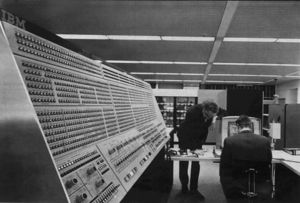
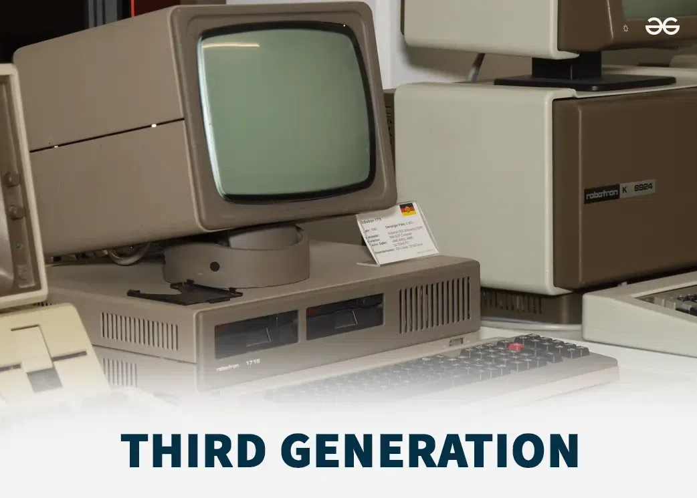

3rd Generation of Computer
Third Generation of Computer (1964–1971)


Overview
Third generation computers replaced transistors with integrated circuits (ICs). This made computers smaller, faster, and more reliable. They produced very little heat and consumed less power. For the first time, computers could support high-level programming languages like COBOL and FORTRAN, making software development easier. These computers were widely used in business, science, and government.
Main Features
- Technology
- Used integrated circuits that combined multiple transistors into a single chip. Improved memory systems and supported faster processing. Supported high-level languages, reducing programming complexity.
- Size and Power
- Smaller and lighter than second generation computers. Produced very little heat and required minimal cooling. Could fit in normal offices or labs without specialized rooms.
- Input & Output
- Input via keyboards, punched cards, and magnetic tapes. Output via printers, monitors, and screens.
- Memory and Storage
- Primary memory: magnetic cores and IC-based memory with larger capacity. Secondary storage: magnetic disks and tapes with higher speed and storage space.
- Speed
- Faster than second generation computers, capable of hundreds of thousands of operations per second.
- Reliability
- Highly reliable; ICs rarely failed. Could run for days without interruption.
- Programming
- Supported high-level languages like COBOL and FORTRAN, making programming faster and easier. Enabled development of more complex software applications.
Examples
- IBM 360 series – Popular commercial and scientific computers.
- CDC 6600 – Considered the first supercomputer.
- UNIVAC 1108 – Used in government and research.
- HP 2100 series – Early business and lab computers.
Application Areas
- Business – Accounting, inventory, banking, and payroll systems
- Scientific Research – Physics, engineering simulations, space programs
- Government – Census, taxation, defense calculations
- Education – Universities and research institutions for teaching and experiments
Conclusion
Third generation computers were a big step forward in performance, size, and reliability. Using integrated circuits made them faster, smaller, and more energy-efficient. High-level languages made programming easier. They laid the foundation for modern computers, and their versatility made them widely used in business, science, and education.
Advancements over Second Generation
- Replaced transistors with integrated circuits → smaller, faster, more reliable
- Supported high-level programming languages
- Improved memory and storage capacity
- Reduced heat generation and power consumption
- Wider applications in business, science, and education